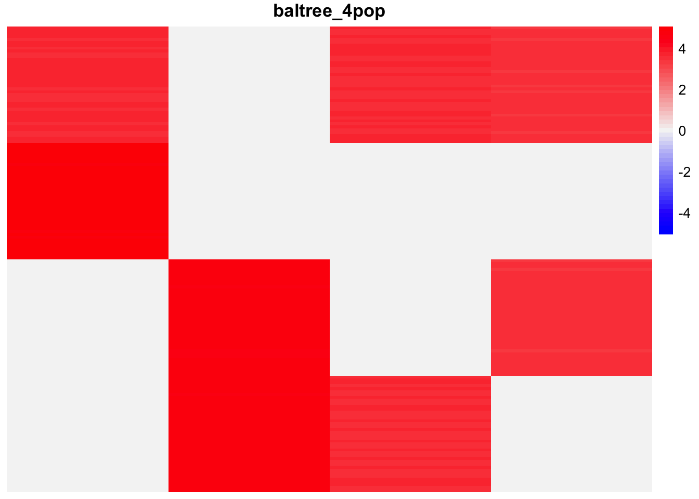
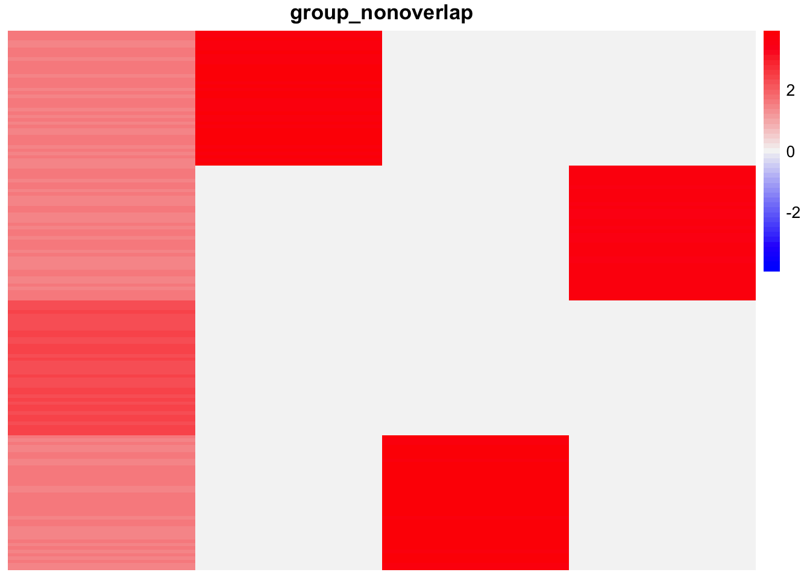
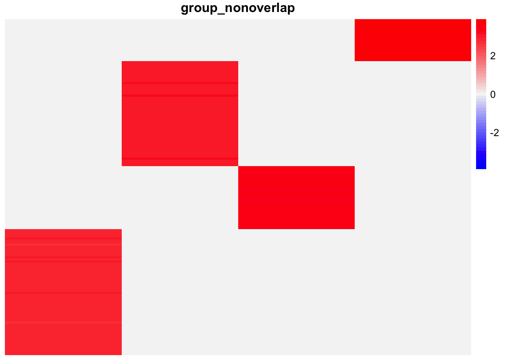
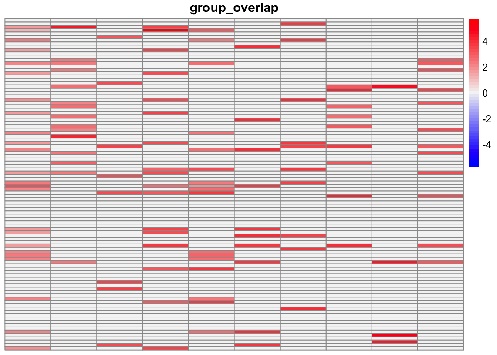
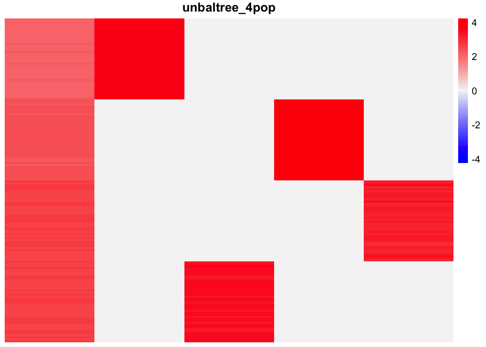
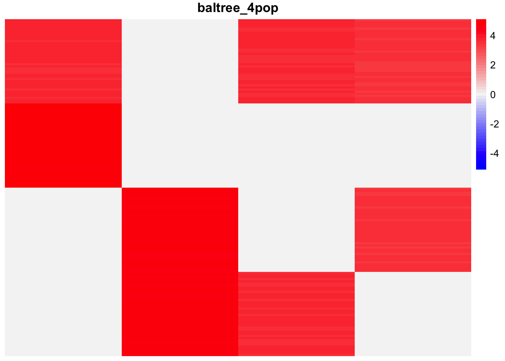
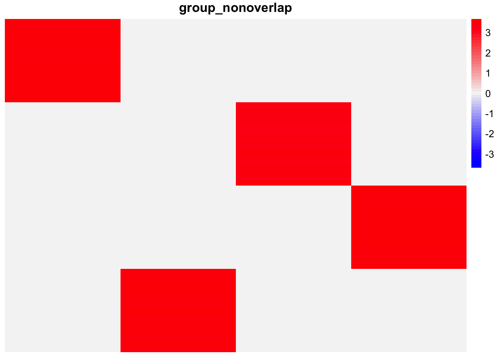
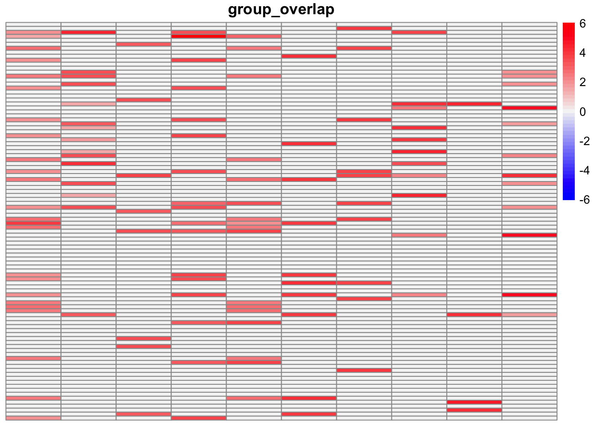

Last updated: 2025-09-11
Checks: 7 0
Knit directory: covariance_decomps_dsc/
This reproducible R Markdown analysis was created with workflowr (version 1.7.1). The Checks tab describes the reproducibility checks that were applied when the results were created. The Past versions tab lists the development history.
Great! Since the R Markdown file has been committed to the Git repository, you know the exact version of the code that produced these results.
Great job! The global environment was empty. Objects defined in the global environment can affect the analysis in your R Markdown file in unknown ways. For reproduciblity it’s best to always run the code in an empty environment.
The command set.seed(20250203) was run prior to running
the code in the R Markdown file. Setting a seed ensures that any results
that rely on randomness, e.g. subsampling or permutations, are
reproducible.
Great job! Recording the operating system, R version, and package versions is critical for reproducibility.
Nice! There were no cached chunks for this analysis, so you can be confident that you successfully produced the results during this run.
Great job! Using relative paths to the files within your workflowr project makes it easier to run your code on other machines.
Great! You are using Git for version control. Tracking code development and connecting the code version to the results is critical for reproducibility.
The results in this page were generated with repository version 57d5f36. See the Past versions tab to see a history of the changes made to the R Markdown and HTML files.
Note that you need to be careful to ensure that all relevant files for
the analysis have been committed to Git prior to generating the results
(you can use wflow_publish or
wflow_git_commit). workflowr only checks the R Markdown
file, but you know if there are other scripts or data files that it
depends on. Below is the status of the Git repository when the results
were generated:
Ignored files:
Ignored: .DS_Store
Ignored: .Rhistory
Ignored: data/.DS_Store
Ignored: data/adclus_cov_comp_dsc_ex/.DS_Store
Ignored: data/adclus_same_init_dsc_ex/.DS_Store
Ignored: data/pt_laplace_split_init_ex/.DS_Store
Note that any generated files, e.g. HTML, png, CSS, etc., are not included in this status report because it is ok for generated content to have uncommitted changes.
These are the previous versions of the repository in which changes were
made to the R Markdown
(analysis/flash_seminmf_analysis.Rmd) and HTML
(docs/flash_seminmf_analysis.html) files. If you’ve
configured a remote Git repository (see ?wflow_git_remote),
click on the hyperlinks in the table below to view the files as they
were in that past version.
| File | Version | Author | Date | Message |
|---|---|---|---|---|
| Rmd | 57d5f36 | Annie Xie | 2025-09-11 | Add exploration of flash-semiNMF |
In this analysis, I am exploring the flash semi-nonnegative matrix factorization method. We apply flash to the data matrix with the generalized binary prior over the loadings matrix and the point-Laplace prior over the factor matrix.
Semi-nonnegative matrix factorization is an alternative approach to covariance decomposition (and of course, nonnegative matrix factorization), e.g. there is a paper that suggests using binary semi-nonnegative matrix factorization for overlapping community detection. One way to get a semiNMF is to apply flashier with a non-negative prior over the loadings \(L\) and a point-Laplace prior over \(F\) (I will refer to this as flash-semiNMF). If the factors are independent, we suspect that flash-semiNMF could get something that looks like a covariance decomposition. In addition, we suspect that flash-semiNMF could perform better if the factors are, in fact, sparse. However, we don’t have any theory that connects flash-semiNMF with a factorization of the distance matrix or the covariance matrix. For flash with a non-negative prior over \(L\) and a normal prior over \(F\), we do have theory which suggests it is a covariance decomposition. However, the mean-field variational approximation encourages \(L\) to be orthogonal. So I wonder if flash-semiNMF would also prefer representations with orthogonal \(L\).
Furthermore, we have found that some covariance decomposition methods which work in the covariance space have a tendency to add extra factors. Our intuition is flash-semiNMF should be better at avoiding extra factors due to the the sparsity inducing priors on the loadings and factors.
library(dplyr)
library(ggplot2)
library(pheatmap)source('code/visualization_functions.R')dscout <- readRDS("data/dsc_results_df.rds")
dim(dscout)[1] 13200 12In this analysis, I focus on the flash semi-nonnegative matrix factorization method. In particular, I focus on the variant which uses backfitting and the generalized binary prior over the loadings. I also am interested in comparing it to flash with a normal prior on \(F\).
dscout <- dscout %>% filter(analyze %in% c('flash_seminmf', 'flash_normalf'), analyze.backfit == TRUE, analyze.ebnm_fn == 'ebnm::ebnm_generalized_binary')In this section, we compare flash-semiNMF with different inputs for
Kmax.
This is the average crossproduct similarity for the method in each setting:
dscout %>% filter(score == 'crossprod_similarity', analyze == 'flash_seminmf') %>% group_by(simulate, simulate.pop_sizes, analyze.Kmax_factor) %>% summarise(avg_result = mean(score.result)) %>% arrange(simulate, simulate.pop_sizes, analyze.Kmax_factor)`summarise()` has grouped output by 'simulate', 'simulate.pop_sizes'. You can
override using the `.groups` argument.# A tibble: 10 × 4
# Groups: simulate, simulate.pop_sizes [5]
simulate simulate.pop_sizes analyze.Kmax_factor avg_result
<chr> <chr> <dbl> <dbl>
1 baltree_4pop rep(40, 4) 1 0.558
2 baltree_4pop rep(40, 4) 2 0.409
3 group_nonoverlap c(20,50,30,60) 1 0.973
4 group_nonoverlap c(20,50,30,60) 2 0.896
5 group_nonoverlap rep(40, 4) 1 0.893
6 group_nonoverlap rep(40, 4) 2 0.944
7 group_overlap <NA> 1 0.897
8 group_overlap <NA> 2 0.839
9 unbaltree_4pop rep(40, 4) 1 0.655
10 unbaltree_4pop rep(40, 4) 2 0.655The method performs best in the non-overlapping settings. Interestingly, there are some settings in which the method performs worse with larger \(K\). Taking a closer look at the scores, I found that for larger \(K\), there were simulations where the method returned a zero matrix for the loadings estimate. In the other simulations, the performance is comparable. As a result, the average crossproduct similarity for larger \(K\) is lower.
In this section, we consider two metrics: 1) the proportion of the estimated factors which are highly similar to a true factor 2) the proportion of true factors that are highly similar to at least one estimated factor. Note that in the first proportion, it is possible that multiple estimates are similar to the same true factor – perhaps to avoid this, the threshold for “highly similar” should be really high, e.g. 0.99.
dscout %>% filter(score == 'prop_true_high_cos_sim', score.threshold == 0.99, analyze == 'flash_seminmf') %>% group_by(simulate, simulate.pop_sizes, score, analyze.Kmax_factor) %>% summarise(avg_result = mean(score.result)) %>% arrange(simulate, simulate.pop_sizes, score, analyze.Kmax_factor)`summarise()` has grouped output by 'simulate', 'simulate.pop_sizes', 'score'.
You can override using the `.groups` argument.# A tibble: 10 × 5
# Groups: simulate, simulate.pop_sizes, score [5]
simulate simulate.pop_sizes score analyze.Kmax_factor avg_result
<chr> <chr> <chr> <dbl> <dbl>
1 baltree_4pop rep(40, 4) prop_true… 1 0.4
2 baltree_4pop rep(40, 4) prop_true… 2 0.3
3 group_nonoverlap c(20,50,30,60) prop_true… 1 0.9
4 group_nonoverlap c(20,50,30,60) prop_true… 2 0.875
5 group_nonoverlap rep(40, 4) prop_true… 1 0.6
6 group_nonoverlap rep(40, 4) prop_true… 2 0.8
7 group_overlap <NA> prop_true… 1 0.56
8 group_overlap <NA> prop_true… 2 0.56
9 unbaltree_4pop rep(40, 4) prop_true… 1 0.557
10 unbaltree_4pop rep(40, 4) prop_true… 2 0.557The proportion of true factors recovered paints a similar story.
dscout %>% filter(score == 'prop_est_high_cos_sim', score.threshold == 0.99, analyze == 'flash_seminmf') %>% group_by(simulate, simulate.pop_sizes, score, analyze.Kmax_factor) %>% summarise(avg_result = mean(score.result)) %>% arrange(simulate, simulate.pop_sizes, score, analyze.Kmax_factor)`summarise()` has grouped output by 'simulate', 'simulate.pop_sizes', 'score'.
You can override using the `.groups` argument.# A tibble: 10 × 5
# Groups: simulate, simulate.pop_sizes, score [5]
simulate simulate.pop_sizes score analyze.Kmax_factor avg_result
<chr> <chr> <chr> <dbl> <dbl>
1 baltree_4pop rep(40, 4) prop_est_… 1 0.65
2 baltree_4pop rep(40, 4) prop_est_… 2 0.46
3 group_nonoverlap c(20,50,30,60) prop_est_… 1 0.9
4 group_nonoverlap c(20,50,30,60) prop_est_… 2 0.855
5 group_nonoverlap rep(40, 4) prop_est_… 1 0.6
6 group_nonoverlap rep(40, 4) prop_est_… 2 0.8
7 group_overlap <NA> prop_est_… 1 0.569
8 group_overlap <NA> prop_est_… 2 0.525
9 unbaltree_4pop rep(40, 4) prop_est_… 1 0.84
10 unbaltree_4pop rep(40, 4) prop_est_… 2 0.84 For most of the methods, the proportion of estimated factors which
are highly similar to a true factor does not change that much between
the two Kmax inputs. The setting with the most significant
change is the balanced tree setting, where the proportion drops from
0.65 to 0.46 with larger \(K\).
In this section, I compare flash with (generalized binary prior on \(L\) and) normal prior on \(F\) with flash with point-Laplace prior on \(F\). I am interested in the method’s ability to avoid redundant or extraneous factors. So I will focus on the setting where the methods are given double the correct number of components.
This is the average crossproduct similarity for the method in each setting:
dscout %>% filter(score == 'crossprod_similarity', analyze.Kmax_factor == 2) %>% group_by(simulate, simulate.pop_sizes, analyze) %>% summarise(avg_result = mean(score.result)) %>% arrange(simulate, simulate.pop_sizes, analyze)`summarise()` has grouped output by 'simulate', 'simulate.pop_sizes'. You can
override using the `.groups` argument.# A tibble: 10 × 4
# Groups: simulate, simulate.pop_sizes [5]
simulate simulate.pop_sizes analyze avg_result
<chr> <chr> <chr> <dbl>
1 baltree_4pop rep(40, 4) flash_normalf 0.834
2 baltree_4pop rep(40, 4) flash_seminmf 0.409
3 group_nonoverlap c(20,50,30,60) flash_normalf 0.973
4 group_nonoverlap c(20,50,30,60) flash_seminmf 0.896
5 group_nonoverlap rep(40, 4) flash_normalf 0.946
6 group_nonoverlap rep(40, 4) flash_seminmf 0.944
7 group_overlap <NA> flash_normalf 0.932
8 group_overlap <NA> flash_seminmf 0.839
9 unbaltree_4pop rep(40, 4) flash_normalf 0.888
10 unbaltree_4pop rep(40, 4) flash_seminmf 0.655In all of the settings, flash with a normal prior on \(F\) performs better. Recall, this method does not penalize extra factors.
In this section, we consider two metrics: 1) the proportion of the estimated factors which are highly similar to a true factor 2) the proportion of true factors that are highly similar to at least one estimated factor. Note that in the first proportion, it is possible that multiple estimates are similar to the same true factor – perhaps to avoid this, the threshold for “highly similar” should be really high, e.g. 0.99.
dscout %>% filter(score == 'prop_true_high_cos_sim', score.threshold == 0.99, analyze.Kmax_factor == 2) %>% group_by(simulate, simulate.pop_sizes, score, analyze) %>% summarise(avg_result = mean(score.result)) %>% arrange(simulate, simulate.pop_sizes, score, analyze)`summarise()` has grouped output by 'simulate', 'simulate.pop_sizes', 'score'.
You can override using the `.groups` argument.# A tibble: 10 × 5
# Groups: simulate, simulate.pop_sizes, score [5]
simulate simulate.pop_sizes score analyze avg_result
<chr> <chr> <chr> <chr> <dbl>
1 baltree_4pop rep(40, 4) prop_true_high_cos_sim flash_… 0.5
2 baltree_4pop rep(40, 4) prop_true_high_cos_sim flash_… 0.3
3 group_nonoverlap c(20,50,30,60) prop_true_high_cos_sim flash_… 0.9
4 group_nonoverlap c(20,50,30,60) prop_true_high_cos_sim flash_… 0.875
5 group_nonoverlap rep(40, 4) prop_true_high_cos_sim flash_… 0.8
6 group_nonoverlap rep(40, 4) prop_true_high_cos_sim flash_… 0.8
7 group_overlap <NA> prop_true_high_cos_sim flash_… 0.64
8 group_overlap <NA> prop_true_high_cos_sim flash_… 0.56
9 unbaltree_4pop rep(40, 4) prop_true_high_cos_sim flash_… 0.571
10 unbaltree_4pop rep(40, 4) prop_true_high_cos_sim flash_… 0.557With regards to the proportion of true factors recovered, we again see that flash with a normal prior on \(F\) has the same or better performance than flash with a point-Laplace prior on \(F\).
dscout %>% filter(score == 'prop_est_high_cos_sim', score.threshold == 0.99, analyze.Kmax_factor == 2) %>% group_by(simulate, simulate.pop_sizes, score, analyze) %>% summarise(avg_result = mean(score.result)) %>% arrange(simulate, simulate.pop_sizes, score, analyze)`summarise()` has grouped output by 'simulate', 'simulate.pop_sizes', 'score'.
You can override using the `.groups` argument.# A tibble: 10 × 5
# Groups: simulate, simulate.pop_sizes, score [5]
simulate simulate.pop_sizes score analyze avg_result
<chr> <chr> <chr> <chr> <dbl>
1 baltree_4pop rep(40, 4) prop_est_high_cos_sim flash_n… 0.878
2 baltree_4pop rep(40, 4) prop_est_high_cos_sim flash_s… 0.46
3 group_nonoverlap c(20,50,30,60) prop_est_high_cos_sim flash_n… 0.454
4 group_nonoverlap c(20,50,30,60) prop_est_high_cos_sim flash_s… 0.855
5 group_nonoverlap rep(40, 4) prop_est_high_cos_sim flash_n… 0.4
6 group_nonoverlap rep(40, 4) prop_est_high_cos_sim flash_s… 0.8
7 group_overlap <NA> prop_est_high_cos_sim flash_n… 0.361
8 group_overlap <NA> prop_est_high_cos_sim flash_s… 0.525
9 unbaltree_4pop rep(40, 4) prop_est_high_cos_sim flash_n… 0.925
10 unbaltree_4pop rep(40, 4) prop_est_high_cos_sim flash_s… 0.84 For the tree settings, flash with normal prior on \(F\) has a higher proportion; perhaps this method does a better job at recovering some of the components of the tree. For the other settings, flash with point-Laplace prior on \(F\) has a higher proportion, suggesting it is better at avoiding extra or redundant factors.
In this section, we visualize an example of estimates from flash-semiNMF. For these estimates, the method was given the correct number of components.
data_files <- list.files(path = 'data/flash_seminmf_dsc_ex')These are heatmaps of the estimated loadings:
for (i in data_files){
#extract method
setting <- sub("^([^_]*_[^_]*).*", "\\1", i)
est <- readRDS(paste0('data/flash_seminmf_dsc_ex/',i))$est_L
plot_heatmap(est, title = setting,
colors_range = c('blue','gray96','red'),
brks = seq(-max(abs(est)), max(abs(est)), length.out = 50))
}
In this section, we visualize another set of estimates – for these estimates, the method was given double the correct number of components.
data_files_2k <- list.files(path = 'data/flash_seminmf_dsc_2k_ex')These are heatmaps of the estimated loadings:
for (i in data_files_2k){
#extract method
setting <- sub("^([^_]*_[^_]*).*", "\\1", i)
est <- readRDS(paste0('data/flash_seminmf_dsc_2k_ex/',i))$est_L
plot_heatmap(est, title = setting,
colors_range = c('blue','gray96','red'),
brks = seq(-max(abs(est)), max(abs(est)), length.out = 50))
}
sessionInfo()R version 4.3.2 (2023-10-31)
Platform: aarch64-apple-darwin20 (64-bit)
Running under: macOS 15.6
Matrix products: default
BLAS: /Library/Frameworks/R.framework/Versions/4.3-arm64/Resources/lib/libRblas.0.dylib
LAPACK: /Library/Frameworks/R.framework/Versions/4.3-arm64/Resources/lib/libRlapack.dylib; LAPACK version 3.11.0
locale:
[1] en_US.UTF-8/en_US.UTF-8/en_US.UTF-8/C/en_US.UTF-8/en_US.UTF-8
time zone: America/Chicago
tzcode source: internal
attached base packages:
[1] stats graphics grDevices utils datasets methods base
other attached packages:
[1] pheatmap_1.0.12 ggplot2_3.5.2 dplyr_1.1.4 workflowr_1.7.1
loaded via a namespace (and not attached):
[1] softImpute_1.4-3 gtable_0.3.6 flashier_1.0.56
[4] xfun_0.52 bslib_0.9.0 htmlwidgets_1.6.4
[7] processx_3.8.4 ggrepel_0.9.6 ebnm_1.1-34
[10] lattice_0.22-6 callr_3.7.6 quadprog_1.5-8
[13] vctrs_0.6.5 tools_4.3.2 ps_1.7.7
[16] generics_0.1.4 parallel_4.3.2 Polychrome_1.5.1
[19] tibble_3.3.0 pkgconfig_2.0.3 Matrix_1.6-5
[22] data.table_1.17.6 SQUAREM_2021.1 RColorBrewer_1.1-3
[25] RcppParallel_5.1.10 scatterplot3d_0.3-44 lifecycle_1.0.4
[28] truncnorm_1.0-9 compiler_4.3.2 farver_2.1.2
[31] stringr_1.5.1 git2r_0.33.0 progress_1.2.3
[34] RhpcBLASctl_0.23-42 getPass_0.2-4 httpuv_1.6.15
[37] htmltools_0.5.8.1 sass_0.4.10 lazyeval_0.2.2
[40] yaml_2.3.10 plotly_4.11.0 crayon_1.5.3
[43] tidyr_1.3.1 later_1.4.2 pillar_1.10.2
[46] jquerylib_0.1.4 whisker_0.4.1 uwot_0.2.3
[49] cachem_1.1.0 trust_0.1-8 gtools_3.9.5
[52] tidyselect_1.2.1 digest_0.6.37 Rtsne_0.17
[55] stringi_1.8.7 purrr_1.0.4 ashr_2.2-66
[58] splines_4.3.2 cowplot_1.1.3 rprojroot_2.0.4
[61] fastmap_1.2.0 grid_4.3.2 colorspace_2.1-1
[64] cli_3.6.5 invgamma_1.1 magrittr_2.0.3
[67] utf8_1.2.6 withr_3.0.2 prettyunits_1.2.0
[70] scales_1.4.0 promises_1.3.3 horseshoe_0.2.0
[73] rmarkdown_2.29 httr_1.4.7 fastTopics_0.6-192
[76] deconvolveR_1.2-1 hms_1.1.3 pbapply_1.7-2
[79] evaluate_1.0.4 knitr_1.50 viridisLite_0.4.2
[82] irlba_2.3.5.1 rlang_1.1.6 Rcpp_1.0.14
[85] mixsqp_0.3-54 glue_1.8.0 rstudioapi_0.16.0
[88] jsonlite_2.0.0 R6_2.6.1 fs_1.6.6